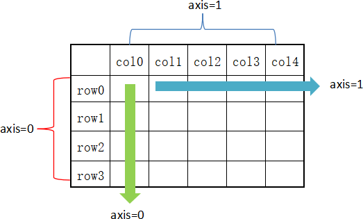

Python Pandas描述性统计
描述统计学（descriptive statistics）是一门统计学领域的学科，主要研究如何取得反映客观现象的数据，并以图表形式对所搜集的数据进行处理和显示，最终对数据的规律、特征做出综合性的描述分析。Pandas 库正是对描述统计学知识完美应用的体现，可以说如果没有“描述统计学”作为理论基奠，那么 Pandas 是否存在犹未可知。下列表格对 Pandas 常用的统计学函数做了简单的总结：
从描述统计学角度出发，我们可以对 DataFrame 结构执行聚合计算等其他操作，比如 sum() 求和、mean()求均值等方法。
在 DataFrame 中，使用聚合类方法时需要指定轴(axis)参数。下面介绍两种传参方式：
创建一个 DataFrame 结构，如下所示：
下面再看一下 axis=1 的情况，如下所示：
include 相关参数值说明如下：
下面看一组示例，如下所示：
| 函数名称 | 描述说明 |
|---|---|
| count() | 统计某个非空值的数量。 |
| sum() | 求和 |
| mean() | 求均值 |
| median() | 求中位数 |
| mode() | 求众数 |
| std() | 求标准差 |
| min() | 求最小值 |
| max() | 求最大值 |
| abs() | 求绝对值 |
| prod() | 求所有数值的乘积。 |
| cumsum() | 计算累计和，axis=0，按照行累加；axis=1，按照列累加。 |
| cumprod() | 计算累计积，axis=0，按照行累积；axis=1，按照列累积。 |
| corr() | 计算数列或变量之间的相关系数，取值-1到1，值越大表示关联性越强。 |
从描述统计学角度出发，我们可以对 DataFrame 结构执行聚合计算等其他操作，比如 sum() 求和、mean()求均值等方法。
在 DataFrame 中，使用聚合类方法时需要指定轴(axis)参数。下面介绍两种传参方式：
- 对行操作，默认使用 axis=0 或者使用 "index"；
- 对列操作，默认使用 axis=1 或者使用 "columns"。

图1：axis轴示意图
从图 1 可以看出，axis=0 表示按垂直方向进行计算，而 axis=1 则表示按水平方向。下面让我们创建一个 DataFrame，使用它对本节的内容进行演示。图1：axis轴示意图
创建一个 DataFrame 结构，如下所示：
import pandas as pd
import numpy as np
#创建字典型series结构
d = {'Name':pd.Series(['小明','小亮','小红','小华','老赵','小曹','小陈',
'老李','老王','小冯','小何','老张']),
'Age':pd.Series([25,26,25,23,30,29,23,34,40,30,51,46]),
'Rating':pd.Series([4.23,3.24,3.98,2.56,3.20,4.6,3.8,3.78,2.98,4.80,4.10,3.65])
}
df = pd.DataFrame(d)
print(df)
输出结果：
Name Age Rating 0 小明 25 4.23 1 小亮 26 3.24 2 小红 25 3.98 3 小华 23 2.56 4 老赵 30 3.20 5 小曹 29 4.60 6 小陈 23 3.80 7 老李 34 3.78 8 老王 40 2.98 9 小冯 30 4.80 10 小何 51 4.10 11 老张 46 3.65
sum()求和
在默认情况下，返回 axis=0 的所有值的和。示例如下：
import pandas as pd
import numpy as np
#创建字典型series结构
d = {'Name':pd.Series(['小明','小亮','小红','小华','老赵','小曹','小陈',
'老李','老王','小冯','小何','老张']),
'Age':pd.Series([25,26,25,23,30,29,23,34,40,30,51,46]),
'Rating':pd.Series([4.23,3.24,3.98,2.56,3.20,4.6,3.8,3.78,2.98,4.80,4.10,3.65])
}
df = pd.DataFrame(d)
#默认axis=0或者使用sum("index")
print(df.sum())
输出结果：
Name 小明小亮小红小华老赵小曹小陈老李老王小冯小何老张 Age 382 Rating 44.92 dtype: object注意：sum() 和 cumsum() 函数可以同时处理数字和字符串数据。虽然字符聚合通常不被使用，但使用这两个函数并不会抛出异常；而对于 abs()、cumprod() 函数则会抛出异常，因为它们无法操作字符串数据。
下面再看一下 axis=1 的情况，如下所示：
import pandas as pd
import numpy as np
d = {'Name':pd.Series(['小明','小亮','小红','小华','老赵','小曹','小陈',
'老李','老王','小冯','小何','老张']),
'Age':pd.Series([25,26,25,23,30,29,23,34,40,30,51,46]),
'Rating':pd.Series([4.23,3.24,3.98,2.56,3.20,4.6,3.8,3.78,2.98,4.80,4.10,3.65])
}
df = pd.DataFrame(d)
#也可使用sum("columns")或sum(1)
print(df.sum(axis=1))
输出结果：
0 29.23 1 29.24 2 28.98 3 25.56 4 33.20 5 33.60 6 26.80 7 37.78 8 42.98 9 34.80 10 55.10 11 49.65 dtype: float64
mean()求均值
示例如下：
import pandas as pd
import numpy as np
d = {'Name':pd.Series(['小明','小亮','小红','小华','老赵','小曹','小陈',
'老李','老王','小冯','小何','老张']),
'Age':pd.Series([25,26,25,23,30,29,23,34,40,30,51,46]),
'Rating':pd.Series([4.23,3.24,3.98,2.56,3.20,4.6,3.8,3.78,2.98,4.80,4.10,3.65])
}
df = pd.DataFrame(d)
print(df.mean())
输出结果：
Age 31.833333 Rating 3.743333 dtype: float64
std()求标准差
返回数值列的标准差，示例如下：
import pandas as pd
import numpy as np
d = {'Name':pd.Series(['小明','小亮','小红','小华','老赵','小曹','小陈',
'老李','老王','小冯','小何','老张']),
'Age':pd.Series([25,26,25,23,59,19,23,44,40,30,51,54]),
'Rating':pd.Series([4.23,3.24,3.98,2.56,3.20,4.6,3.8,3.78,2.98,4.80,4.10,3.65])
}
df = pd.DataFrame(d)
print(df.std())
输出结果：
Age 13.976983 Rating 0.661628 dtype: float64标准差是方差的算术平方根，它能反映一个数据集的离散程度。注意，平均数相同的两组数据，标准差未必相同。
数据汇总描述
describe() 函数显示与 DataFrame 数据列相关的统计信息摘要。示例如下：
import pandas as pd
import numpy as np
d = {'Name':pd.Series(['小明','小亮','小红','小华','老赵','小曹','小陈',
'老李','老王','小冯','小何','老张']),
'Age':pd.Series([25,26,25,23,30,29,23,34,40,30,51,46]),
'Rating':pd.Series([4.23,3.24,3.98,2.56,3.20,4.6,3.8,3.78,2.98,4.80,4.10,3.65])
}
#创建DataFrame对象
df = pd.DataFrame(d)
#求出数据的所有描述信息
print(df.describe())
输出结果：
Age Rating count 12.000000 12.000000 mean 34.916667 3.743333 std 13.976983 0.661628 min 19.000000 2.560000 25% 24.500000 3.230000 50% 28.000000 3.790000 75% 45.750000 4.132500 max 59.000000 4.800000describe() 函数输出了平均值、std 和 IQR 值(四分位距)等一系列统计信息。通过 describe() 提供的
include能够筛选字符列或者数字列的摘要信息。include 相关参数值说明如下：
- object： 表示对字符列进行统计信息描述；
- number：表示对数字列进行统计信息描述；
- all：汇总所有列的统计信息。
下面看一组示例，如下所示：
import pandas as pd
import numpy as np
d = {'Name':pd.Series(['小明','小亮','小红','小华','老赵','小曹','小陈',
'老李','老王','小冯','小何','老张']),
'Age':pd.Series([25,26,25,23,59,19,23,44,40,30,51,54]),
'Rating':pd.Series([4.23,3.24,3.98,2.56,3.20,4.6,3.8,3.78,2.98,4.80,4.10,3.65])
}
df = pd.DataFrame(d)
print(df.describe(include=["object"]))
输出结果：
Name
count 12
unique 12
top 小红
freq 1
最后使用all参数，看一下输出结果，如下所示：
import pandas as pd
import numpy as np
d = {'Name':pd.Series(['小明','小亮','小红','小华','老赵','小曹','小陈',
'老李','老王','小冯','小何','老张']),
'Age':pd.Series([25,26,25,23,59,19,23,44,40,30,51,54]),
'Rating':pd.Series([4.23,3.24,3.98,2.56,3.20,4.6,3.8,3.78,2.98,4.80,4.10,3.65])
}
df = pd.DataFrame(d)
print(df.describe(include="all"))
输出结果：
Name Age Rating
count 12 12.000000 12.000000
unique 12 NaN NaN
top 小红 NaN NaN
freq 1 NaN NaN
mean NaN 34.916667 3.743333
std NaN 13.976983 0.661628
min NaN 19.000000 2.560000
25% NaN 24.500000 3.230000
50% NaN 28.000000 3.790000
75% NaN 45.750000 4.132500
max NaN 59.000000 4.800000
关注公众号「站长严长生」，在手机上阅读所有教程，随时随地都能学习。内含一款搜索神器，免费下载全网书籍和视频。

微信扫码关注公众号